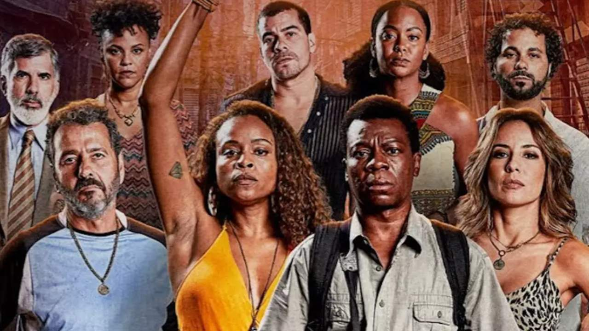

Jovem sonhador que quer fugir da vida do crime e se tornar fotógrafo.
Um dos criminosos mais perigosos da Cidade de Deus, conhecido por sua violência.
Amigo de Zé Pequeno, mas com uma personalidade mais tranquila e carismática.
